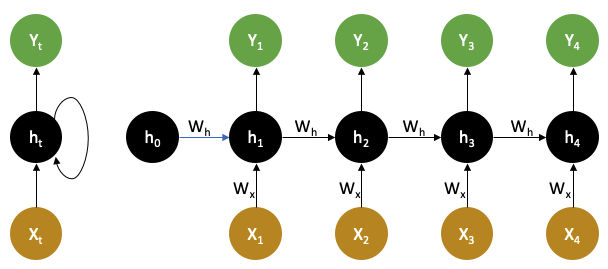
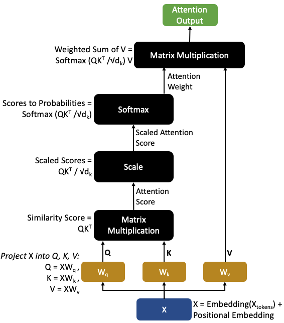

Transformers — A Deep Dive
1 Introduction
Transformers are a neural network architecture designed for processing sequential data. Introduced in the 2017 paper Attention is All You Need, transformers replaced recurrent and convolutional architectures in many NLP tasks. They leverage a novel mechanism called self-attention, which enables better parallelization and more effective handling of long-range dependencies.

2 Limitations of Recurrent Neural Networks (RNNs)
Before the advent of transformers, Recurrent Neural Networks (RNNs) were the dominant architecture for sequence modeling tasks. Their ability to process sequences of variable length and maintain a memory of past inputs made them widely adopted. In an RNN, the hidden state \(h_t\) at time \(t\) is computed based on the current input \(x_t\) and the previous hidden state \(h_{t-1}\).
This allows RNNs to process sequences by carrying information forward over time.
The hidden state at time t can be computed recursively as:
\[ h_t = \tanh(W_h h_{t-1} + W_x x_t + b) \]
where:
- \(W_h\) — weight matrix for the hidden state
- \(W_x\) — weight matrix for the input
- \(b\) — bias term
- \(\tanh\) — activation function
The figure below shows a single RNN cell (left) and the unrolled RNN over multiple time steps (right).

However, RNNs suffer from:
- Sequential computation: Cannot fully parallelize processing of sequences.
- Vanishing/exploding gradients: Gradients through many time steps can vanish or blow up, making it difficult to learn long-term dependencies.
3 Architecture Overview
At a high level:
- Encoder–Decoder (original transformer) — used in translation.
- Encoder-only (e.g., BERT) — for classification, masked language modeling.
- Decoder-only (e.g., GPT) — for autoregressive text generation.
At the heart of these architectures is the self-attention mechanism, which enables each token to attend to all others in the sequence — a key innovation that we’ll explain shortly.
We’ll break down the encoder and decoder below.
4 Encoder
The encoder consists of a stack of identical layers, each containing:
- Multi-Head Self-Attention
- Feedforward Network
- Residual Connections + Layer Norm
- Positional Encoding
4.1 Core Concepts
4.1.1 Attention Mechanism
At the heart of the transformer is the scaled dot-product attention mechanism, which allows the model to weigh the relevance of each token in the sequence when processing a given token. This enables the model to capture relationships between tokens regardless of their distance in the sequence.
What is Attention?
Each token is projected into three vectors:
- Query (\(Q\)): represents the token we’re focusing on.
- Key (\(K\)): represents the tokens we compare against.
- Value (\(V\)): represents the information we retrieve if the key is relevant.
For a given query \(Q\), the attention weights over all keys \(K\) are computed by taking the dot product of \(Q\) with \(K\), scaling, and passing through a softmax:
\[ \text{Attention}(Q, K, V) = \text{softmax} \left( \frac{Q K^T}{\sqrt{d_k}} \right) V \]
where:
- \(Q\) is the matrix of query vectors, shape \([n \times d_k]\)
- \(K\) is the matrix of key vectors, shape \([n \times d_k]\)
- \(V\) is the matrix of value vectors, shape \([n \times d_v]\)
- \(d_k\) is the dimension of the keys (used for scaling)
Step-by-step Computation
The figure below illustrates the computation flow of scaled dot-product attention, including the dimensions of each variable at every stage:

Breakdown of the Steps
1: Input Representation: \[ X = \text{Embedding}(X_{\text{tokens}}) + \text{PositionalEncoding} \]
2: Linear Projections: \[ Q = X W_q, \quad K = X W_k, \quad V = X W_v \]
3: Compute Similarity Scores: \[ Q K^T \]
4: Scale the Scores:
\[
\frac{Q K^T}{\sqrt{d_k}}
\]
5: Softmax to get Attention Weights: \[ \text{softmax} \left( \frac{Q K^T}{\sqrt{d_k}} \right) \]
6: Weighted Sum: \[ \text{Attention Weights} \cdot V \]
Why is Attention Powerful?
- Captures long-range dependencies.
- Learns which tokens are most relevant to each other.
- Fully parallelizable since it operates on the entire sequence at once.
4.1.2 PyTorch: Scaled Dot-Product Attention
import torch
import torch.nn.functional as F
def scaled_dot_product_attention(Q, K, V, mask=None):
d_k = Q.size(-1)
scores = torch.matmul(Q, K.transpose(-2, -1)) / torch.sqrt(torch.tensor(d_k, dtype=torch.float32))
if mask is not None:
scores = scores.masked_fill(mask == 0, -1e9)
weights = F.softmax(scores, dim=-1)
return torch.matmul(weights, V), weights4.1.3 Multi-Head Attention
from torch import nn
class MultiHeadAttention(nn.Module):
def __init__(self, d_model, num_heads):
super().__init__()
assert d_model % num_heads == 0
self.d_k = d_model // num_heads
self.num_heads = num_heads
self.q_linear = nn.Linear(d_model, d_model)
self.k_linear = nn.Linear(d_model, d_model)
self.v_linear = nn.Linear(d_model, d_model)
self.out_linear = nn.Linear(d_model, d_model)
def forward(self, Q, K, V, mask=None):
batch_size = Q.size(0)
Q = self.q_linear(Q).view(batch_size, -1, self.num_heads, self.d_k).transpose(1,2)
K = self.k_linear(K).view(batch_size, -1, self.num_heads, self.d_k).transpose(1,2)
V = self.v_linear(V).view(batch_size, -1, self.num_heads, self.d_k).transpose(1,2)
attn_output, _ = scaled_dot_product_attention(Q, K, V, mask)
attn_output = attn_output.transpose(1,2).contiguous().view(batch_size, -1, self.num_heads * self.d_k)
return self.out_linear(attn_output)4.1.4 Positional Encoding
import math
class PositionalEncoding(nn.Module):
def __init__(self, d_model, max_len=5000):
super().__init__()
pe = torch.zeros(max_len, d_model)
position = torch.arange(0, max_len, dtype=torch.float).unsqueeze(1)
div_term = torch.exp(torch.arange(0, d_model, 2).float() * -(math.log(10000.0) / d_model))
pe[:, 0::2] = torch.sin(position * div_term)
pe[:, 1::2] = torch.cos(position * div_term)
pe = pe.unsqueeze(0)
self.register_buffer('pe', pe)
def forward(self, x):
x = x + self.pe[:, :x.size(1), :]
return x4.1.5 Feedforward Network
class PositionwiseFFN(nn.Module):
def __init__(self, d_model, d_ff, dropout=0.1):
super().__init__()
self.ffn = nn.Sequential(
nn.Linear(d_model, d_ff),
nn.ReLU(),
nn.Linear(d_ff, d_model),
nn.Dropout(dropout)
)
def forward(self, x):
return self.ffn(x)4.1.6 Residual Connections & Layer Norm
class SublayerConnection(nn.Module):
def __init__(self, d_model, dropout=0.1):
super().__init__()
self.norm = nn.LayerNorm(d_model)
self.dropout = nn.Dropout(dropout)
def forward(self, x, sublayer):
return x + self.dropout(sublayer(self.norm(x)))5 Decoder
The decoder is used for sequence generation.
It also consists of stacked layers with three components:
- Masked Multi-Head Self-Attention — only attends to past tokens.
- Encoder–Decoder Attention — attends to the encoder output.
- Feedforward + normalization + residuals
5.1 Attention Mask for Decoder
def generate_square_subsequent_mask(sz):
mask = (torch.triu(torch.ones(sz, sz)) == 1).transpose(0, 1)
mask = mask.float().masked_fill(mask == 0, float('-inf')).masked_fill(mask == 1, float(0.0))
return mask5.2 Simplified Decoder Layer
class DecoderLayer(nn.Module):
def __init__(self, d_model, heads, d_ff, dropout=0.1):
super().__init__()
self.self_attn = MultiHeadAttention(d_model, heads)
self.cross_attn = MultiHeadAttention(d_model, heads)
self.ffn = PositionwiseFFN(d_model, d_ff, dropout)
self.norm1 = SublayerConnection(d_model, dropout)
self.norm2 = SublayerConnection(d_model, dropout)
self.norm3 = SublayerConnection(d_model, dropout)
def forward(self, x, memory, tgt_mask=None, memory_mask=None):
x = self.norm1(x, lambda x: self.self_attn(x, x, x, tgt_mask))
x = self.norm2(x, lambda x: self.cross_attn(x, memory, memory, memory_mask))
x = self.norm3(x, self.ffn)
return x6 Training Tips
- Large batches & data.
- Learning rate warm-up.
- Label smoothing.
- Gradient clipping.
7 Variants and Evolutions
| Model | Type | Use Case |
|---|---|---|
| BERT | Encoder-only | Classification, QA |
| GPT | Decoder-only | Text generation |
| T5 | Encoder–Decoder | Translation, summarization |
| ViT | Encoder-only | Image classification |
8 Applications
- NLP: translation, summarization, question answering.
- Vision: Vision Transformers (ViTs).
- Multimodal: CLIP (image-text), Flamingo.
- Other: Protein folding (AlphaFold).
9 Strengths and Limitations
Pros:
- Captures long dependencies.
- Parallelizable.
- State-of-the-art results.
Cons:
- Requires huge compute resources.
- Data-hungry.
- Less interpretable.
10 Future Directions
- Efficient transformers (Linformer, Performer).
- Sparse attention.
- Better interpretability.
- New domains beyond NLP & vision.
11 References & Further Reading
- Attention is All You Need — arXiv:1706.03762
- BERT — arXiv:1810.04805
- GPT-3 — arXiv:2005.14165
- Vision Transformer — arXiv:2010.11929